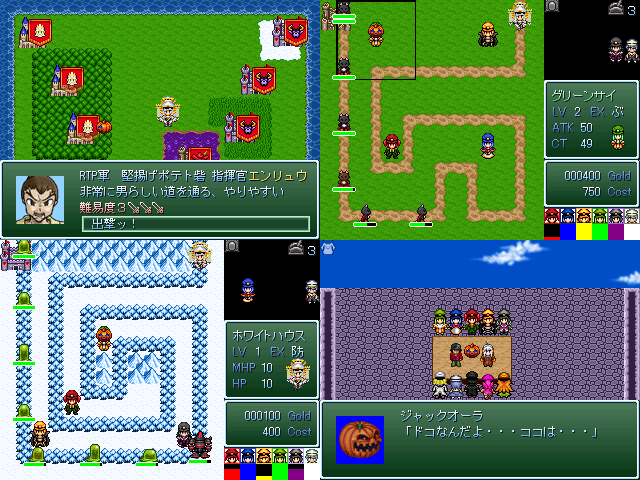

|
| |
 | |
| 【作者名】 | テンション◆9n187RZS9w |
| 【作者コメント】 | ゲーム業界には口のでかい奴が多すぎる！ ゲーム製作者は自惚れたら終わりです。 遊ぶ側に立って作らなければ面白いゲームは生まれない。 一般ユーザーであり、ゲーム製作者である 俺こそゲームの本質を理解している、”本物”！ ハッタリでないことはストラテジーとかディフェンスとかを 遊べばすぐに分かるでしょう。 なんて大胆不敵なことは言えないksやるゲです 完成度が低いので、バグがあったりゲームバランスksだったり セリフパートがｇｄｇｄだったりします |
| 【管理人コメント】 | 今年の紅白にSLG分が補充されました。 |
|
| |